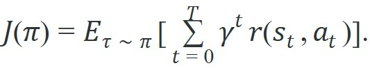
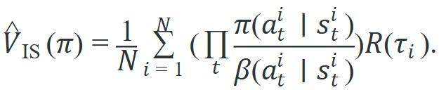

"A policy that scores well on the logged data and fails in the world has taught you one thing: the log was not the world."
A Disappointed Evaluator
This section builds directly on the distribution-shift analysis in section 25.2 and the conservative objectives introduced in section 25.3; familiarity with both makes the support-audit and pessimism steps here concrete rather than abstract. The evaluation discipline developed in this section reappears in section 26.3, where the same-config reporting contract is applied to hierarchical skill policies that compose offline-learned primitives.
A manipulation policy scores 94% on logged kitchen data, so the team ships it. The robot immediately collides with a cabinet handle that appears in 0.2% of real deployments but nowhere in the log. The score was real; the safety was not. As embodied AI moves from curated benchmarks to open-world deployment, the gap between offline metrics and live performance has become the primary source of silent failure. The discipline developed here closes that gap: audit the support envelope of your dataset, apply doubly-robust off-policy estimators where they are valid, and build evaluation panels that force a policy to answer for the states it will actually face.
A policy can earn a flawless 94% on every logged trajectory you own and still drive a robot arm into a cabinet the first hour it runs, because the score measured what the data already contained and the world contained something else. That single gap is what this section exists to close. Throughout, the behavior policy (often written $\beta$) is whatever controller actually generated the logged data, and the target policy $\pi$ is the new policy we want to score; off-policy evaluation means estimating how $\pi$ would perform using only data collected by $\beta$. Figure 25.5A previews the core idea: a doubly-robust off-policy estimator (one that blends a learned value model with importance-weighted corrections) sits between a naive average of logged returns and the true on-policy performance, cutting variance by using the behavior policy as a control variate (a quantity whose known behavior is subtracted out to reduce the noise in an estimate, here the behavior policy's own logged returns). By the end of this section you should be able to audit a dataset's support envelope, decide when an off-policy estimate is trustworthy, and assemble an evaluation panel that holds a policy accountable for the states it will actually face.
Imagine a robot arm trained entirely on 50,000 logged pick-and-place episodes. At evaluation time, the learned policy proposes a wrist angle 15 degrees outside anything in the log. No simulator exists, the real arm cannot be queried during training, and the value function has never seen that configuration. The number it returns for that state-action pair is an extrapolation, not a measurement. Offline evaluation exists precisely to catch this gap before it becomes a hardware incident or a misleading benchmark number. A score on logged data is a record of what the behavior policy did; it is not a promise about what your policy will do.
For Evaluating offline policies rigorously, offline RL starts from a static dataset and must make the behavior policy, support envelope, reward labels, and candidate-policy update explicit before any robot rollout is trusted.
So far: a logged score only measures the behavior policy's own data, off-policy evaluation tries to estimate a new policy's return from that same static log, and a doubly-robust estimator reduces the variance of that estimate by treating the behavior policy as a control variate. What is still missing is a way to tell when the logged data even covers the actions the new policy wants to take, which is the coverage question the next subsection addresses.
Offline evaluation is hard because the learned policy can choose actions the logged data never contains. The D4RL "random" locomotion datasets (Fu et al., 2020) make the point sharply. Policies trained on sparse coverage reached only 2 to 5 normalized return (task return rescaled so 0 marks a random policy and 100 marks a trained expert, which lets scores be compared across tasks with different raw reward scales). The same algorithms on "medium-expert" data reached 90 to 110. One codebase, a tenfold gap, and the only difference was whether the data covered the good states. Coverage dominates algorithm choice so completely that in the robomimic manipulation study, behavior cloning on 300 proficient-human episodes beat CQL trained on 50,000 mixed episodes. More data made things worse here: the extra 49,700 episodes were suboptimal, and they diluted the support for the actions that actually mattered. A reliable evaluation plan therefore combines behavior cloning baselines, off-policy estimates where assumptions hold, simulator or real rollouts on held-out task panels, and qualitative failure labels.
For Evaluating offline policies rigorously, the policy is allowed to improve only inside measured dataset support; outside that support, the value estimate should be treated as a risk signal.
Coverage dominates the score, so the objective has to make explicit where support enters. For Evaluating offline policies rigorously, the baseline objective is useful only after the data distribution and robot action scale are fixed; otherwise expected return can reward unsupported commands.

For Evaluating offline policies rigorously, the practical objective needs a pessimism or support term because training cannot ask the real robot whether a novel action is safe.

Think of importance sampling like scaling a recipe. If your cookbook (the behavior policy) calls for a pinch of salt at each step but your new recipe (the target policy) doubles the salt every step, the correction factor compounds: two doublings across ten steps means the final dish is rescaled by a factor of 1024. A single ingredient swap that seems minor at one step multiplies into an enormous distortion by the end, making the "adjusted" recipe unrecognizable. That is exactly why the product of per-step probability ratios explodes when the target policy diverges from the logging policy, and why clipping or a doubly-robust correction is needed to keep the estimate grounded.
For Evaluating offline policies rigorously, the pessimism term should expose unsupported gripper poses, contact modes, saturation regions, missing viewpoints, or reset states rather than hiding them in one value estimate. Figure 25.5.B lays out the four-stage pipeline that keeps this pessimism honest: the dataset, the behavior-support check, the pessimistic critic, and the policy that finally acts, all scored on one shared evaluation panel. The critic in that pipeline is trained on Bellman targets, current reward plus the discounted value of the next logged state; the Algorithm box later in this section spells out that training step in full, so treat the diagram here as a preview of a mechanism defined precisely below.
The importance-sampling estimator above looks harmless on the page. Run three trajectories through it and one weight takes over, which exposes its fragility. Code Fragment 1 for Evaluating offline policies rigorously compares candidate actions with dataset support and applies pessimism only after the support metric and robot action scale are explicit.
# Show why importance sampling can become unstable offline.
# The product of action-probability ratios can make one trajectory dominate.
import numpy as np
returns = np.array([1.0, 0.0, 1.0])
ratios = np.array([
[1.1, 0.9, 1.0],
[0.8, 1.2, 0.7],
[2.5, 2.0, 1.8],
])
trajectory_weights = ratios.prod(axis=1)
estimate = np.mean(trajectory_weights * returns)
for idx, weight in enumerate(trajectory_weights):
print(f"trajectory={idx} weight={weight:.2f} return={returns[idx]:.1f}")
print(f"ordinary_is_estimate={estimate:.2f}")Trace through a doubly-robust (DR) estimate with three logged trajectories and compare it to ordinary IS. Take the per-trajectory IS weights from Code Fragment 1: w = [0.99, 0.67, 9.00] with returns R = [1.0, 0.0, 1.0]. Suppose a learned value model predicts baseline returns V = [0.9, 0.1, 0.8] for those trajectories (close to the truth, since it was fit on the data). The DR estimator corrects the model with weighted residuals: DR = mean(V) + mean(w * (R - V)). Step 1, residuals R - V = [0.1, -0.1, 0.2]. Step 2, weighted residuals w * (R - V) = [0.099, -0.067, 1.80]. Step 3, mean of weighted residuals = (0.099 - 0.067 + 1.80) / 3 = 0.611. Step 4, mean(V) = (0.9 + 0.1 + 0.8) / 3 = 0.600. Step 5, DR = 0.600 + 0.611 = 1.211. Compare: ordinary IS gave 3.33, an estimate inflated more than threefold by the weight-9.00 trajectory, while DR lands at 1.21 because the value model already explained most of trajectory 2's return, so only the small residual gets multiplied by the explosive weight. That residual-shrinking is exactly the variance reduction Figure 25.5A illustrates.
Trajectory 2 showed up with a weight of 9.00 and single-handedly inflated the estimate to 3.33, which is a reasonable metaphor for that one overconfident colleague whose self-assessment dominates every team performance review: statistically loud, empirically unsupported, and extremely hard to clip without a pessimism penalty.
When importance-sampling weights explode (as in the weight-9.00 example above), switch from ordinary IS to per-decision importance sampling (PDIS, which multiplies ratios only up to each reward's own timestep instead of over the whole trajectory, so a large ratio late in an episode cannot inflate the weight applied to an early reward). Alternatively, use d3rlpy's built-in DoublyRobustEvaluator with weight_clip set to a finite value.
On the robomimic "Mixed" split (a Franka Panda arm, 300 pick-and-place episodes, expert and suboptimal operators mixed), unclipped IS weights can routinely exceed 50 for rare wrist-rotation actions, and in practice this causes the OPE estimate to vary by more than 40 normalized-return points across seeds. Clipping at 20.0 typically reduces that variance below 5 points. Clipping trades variance for bias in general, since it caps how much any single trajectory can pull the estimate toward its own outcome; here that bias stays small because the actions being clipped were rarely-taken wrist rotations near the Franka's mechanical limit of plus or minus 166 degrees, so the clip discards weight mass from a narrow, already-constrained action range rather than from the bulk of plausible actions.
On the Open X-Embodiment RT-2 subset (22 robot embodiments, 13 camera viewpoints), the 20.0 threshold tends to be too loose. Camera-viewpoint mismatches between behavior and target policy can push weight spikes above 200, so a clip closer to 5.0 is typically needed before doubly robust estimates stabilize. Treat both thresholds as starting points to tune per dataset, not universal constants.
If you are unsure which threshold to use, compare four variants on a held-out split: raw IS, clipped IS at 5.0, clipped IS at 20.0, and the doubly robust estimator. If the variants disagree by more than 15 normalized-return points, dataset coverage is too sparse to trust any offline estimate. Run a real hardware rollout on a 20-episode held-out task panel instead.
The robomimic study (Mandlekar et al., 2021) evaluated BC, BC-RNN, CQL, and IQL on the same simulated manipulation tasks and found that data quality mattered more than algorithm choice: on the "Proficient Human" split, BC-RNN matched or beat CQL on most tasks, while on the "Mixed" split with suboptimal trajectories, CQL's conservatism provided a measurable advantage. The D4RL benchmark (Fu et al., 2020) similarly showed that on the "random" locomotion datasets, all offline RL methods including CQL produced policies only marginally better than random action, because the data support was too sparse for any value estimate to be reliable. These two results together ground the practical recipe below: algorithm choice matters far less than knowing the quality and coverage of the dataset before training.
For Evaluating offline policies rigorously, use d3rlpy, robomimic, or LeRobot after the support audit is defined; the library may replace replay-buffer plumbing but must preserve dataset split, action scale, and evaluation artifact.
Consider an Amazon-style warehouse bin-picking cell: a UR5e arm with a suction gripper, logged across 8,000 episodes that mix successful picks, slip recoveries, and dropped-item failures. Before claiming an IQL policy beats the behavior-cloning baseline, build one table whose rows are individual held-out bins and whose columns align, per bin, the BC success rate, the IQL success rate, the nearest-neighbor support distance in suction-pose space, and the failure label. The pattern that exposes a fake improvement: IQL's average climbs only on bins where the support distance is large, meaning the gain lives entirely in extrapolated suction poses the 8,000 episodes never measured. Sort the table by support distance and the illusion is visible at a glance.
Autonomous-driving fleets such as Waymo's are reported to score candidate driving policies on logged fleet data before any of them touch a public road, typically pairing off-policy estimators with counterfactual simulation to flag when a proposed maneuver leaves the support of what human drivers actually demonstrated. The general principle this illustrates is not specific to driving: because a live A/B test of an unsafe policy is unacceptable, a doubly-robust style of estimate is one plausible gating mechanism for deciding which policies even qualify for closed-course rollout, in driving or in any other safety-critical embodied domain.
Goal: empirically see how off-policy evaluation error grows as the target policy drifts away from the behavior policy that generated the data.
Tools: Python, d3rlpy, gymnasium, and a D4RL dataset (start with halfcheetah-medium-v2). Install with pip install d3rlpy gymnasium minari.
Steps: Load the dataset and train a behavior-cloning policy as your "behavior" reference. Train an IQL policy on the same data as your "target". Use d3rlpy's InitialStateValueEstimationEvaluator and a doubly-robust off-policy estimator to score the IQL policy from logged data only. Then run the IQL policy live in the Gymnasium environment for 50 episodes to get the true return.
What to vary: the IS weight clip threshold (try 1.0, 5.0, 20.0, and unclipped) and the dataset quality tier (swap medium for random and medium-expert).
What to observe: the gap between the off-policy estimate and the true live return at each setting. You should see the estimate become wildly optimistic on the random dataset and stabilize on medium-expert, and you should see clipping trade variance for bias. Plot the nearest-neighbor state-action distance during live rollouts to connect divergence to support escape.
For Evaluating offline policies rigorously, compare behavior cloning and offline RL under the same split: BC is strongest with narrow expert demonstrations, while offline RL needs meaningful rewards, recoveries, and a visible support audit.
Distribution shift failure often stays invisible until real deployment. A CQL or IQL policy scores well on held-out logged trajectories because those trajectories stay inside the behavior distribution, so the critic's pessimism penalty never fires on states it has already seen. The failure surfaces only when the real robot reaches a novel contact configuration or viewpoint. At that point the value estimate is an unconstrained extrapolation, and the policy can output confidently wrong actions. The diagnostic is direct. Plot the nearest-neighbor distance in state-action space between each policy rollout step and the training dataset; a rising distance profile signals that the policy is leaving the support envelope.
This matters for physical robots because a value function trained on logged data has no supervised signal for out-of-support states. When a robot wrist angle or contact force lands outside the dataset, the critic extrapolates freely and can confidently recommend actions that cause collisions, joint-limit faults, or dropped objects. There is no online correction possible during an offline-only deployment, so a silent extrapolation becomes a hardware incident.
Mechanically, embed each state-action pair as a vector and measure its Euclidean distance to the nearest point in the training set. A small distance means the situation resembles logged experience; a large one means the critic's output is extrapolation beyond its training manifold. Plot that distance across every timestep of a held-out rollout, and the curve shows exactly when and where the policy leaves the envelope the data can support.
Scalable off-policy evaluation for cross-embodiment datasets. The Open X-Embodiment dataset (2023) aggregated trajectories from 22 robot types, but its sheer diversity broke conventional OPE estimators whose importance weights assume a single behavior policy. The 2024 direction, pursued by groups at Google DeepMind and CMU, is to learn a unified behavior-policy model across embodiments and use it as a shared control variate for doubly robust estimators. The paper "Cross-Embodiment Robot Learning" (Padalkar et al., 2024, in the RT-X line) quantifies how policy-value estimates collapse without embodiment-aware support correction.
Diffusion-based conservative critics. Diffusion policies (Chi et al., 2023) achieve strong imitation performance, but their energy-based structure (the policy is defined implicitly, as the action that a denoising process converges to, rather than as an explicit action-probability formula) makes it hard to attach a pessimistic value penalty in the offline RL sense. Through 2024-2025, labs including Stanford ILIAD and Berkeley RAIL have been exploring score-function penalty terms that penalize actions whose denoising trajectory strays from the dataset manifold, offering a principled analog to CQL's Q-penalty for generative-model policies. Work such as "Diffusion-based Offline RL" (He et al., 2024, arXiv) exemplifies this direction.
Foundation-model-guided support auditing. Rather than computing nearest-neighbor distances in raw state-action space, 2024-2026 work (including language-conditioned offline RL at Google and Meta) uses vision-language embeddings to define support: if the current scene is semantically distant from any logged scene, the policy is flagged as extrapolating. This reframes the support audit as a semantic retrieval problem and enables zero-shot support checks on novel task prompts without retraining the support estimator.
Open problem for PhD students. No agreed protocol yet exists for evaluating offline policies on datasets that mix radically different behavior sources (teleoperation, scripted controllers, web video) at varying quality levels. A tractable thesis contribution would be a calibration study: given a mixed-source offline dataset, derive a per-source importance weight that keeps the doubly robust estimator's bias below a known bound, and validate the bound against held-out real-robot rollouts on at least two manipulation benchmarks.
For Evaluating offline policies rigorously, trust requires naming the behavior policy, support estimator, pessimism mechanism, BC baseline, and exact evaluation artifact.
The concrete go/no-go rule this section has been building toward: an offline estimate is trustworthy only when (1) BC has been reported on the same panel, (2) nearest-neighbor support distance stays low for the actions the candidate policy actually proposes, and (3) at least two estimator variants (for example clipped IS at two thresholds, or IS versus doubly robust) agree within the panel's tolerance. If any of the three is missing, treat the number as a hypothesis and schedule a real or simulated rollout before trusting it.
Evaluating offline policies rigorously is useful when it makes the perception-action loop more reliable, not when it merely adds a more impressive model name.
1. Support-envelope visualizer for D4RL locomotion (beginner, weekend). Build a script using Gymnasium and d3rlpy that loads any D4RL HalfCheetah dataset, trains a behavior cloning policy, then plots nearest-neighbor distances in state-action space between rollout steps and the training set so the support boundary is visible. The key challenge is computing per-step distances efficiently across a dataset of 50,000 transitions without running out of RAM on a laptop.
2. Offline-to-online safety gate for a PyBullet manipulation task (intermediate, 1 to 2 weeks). Train an IQL policy offline on 1,000 logged pick-and-place episodes in PyBullet, then implement a runtime gate that queries the behavior model's log probability at each step and halts the robot when the policy ventures outside a distance threshold. The key challenge is choosing a threshold that blocks genuinely dangerous extrapolations without halting on routine state variation, which requires calibrating the gate on a held-out rollout panel before any real deployment.
Design a method-matched experiment for Evaluating offline policies rigorously. Specify the environment, observation schema, action interface, metric, and one perturbation that targets the section's core assumption.
This section grounded evaluating offline policies rigorously in an explicit robot-data contract: observations, actions, demonstrations, evaluation splits, and failure labels. The next reading step is Chapter 26: Skills, Hierarchy, and Task Decomposition, where the same contract is carried into the next technique or chapter.
IQL avoids direct evaluation of unseen actions and extracts policies through advantage-weighted behavioral cloning (imitation learning where each logged action is weighted by how much better it was than the state's average, so above-average actions are cloned more strongly). It is a practical complement to CQL when teaching conservative improvement from static data.
CQL addresses overestimation from distribution shift by learning conservative value estimates. It is essential for understanding why offline RL must avoid unsupported actions.
D4RL: Datasets for Deep Data-Driven Reinforcement Learning.
D4RL popularized standardized offline RL datasets and benchmark tasks. Readers should use it as a cautionary baseline source, since robot deployment needs extra support checks beyond benchmark scores.
d3rlpy: Offline Deep Reinforcement Learning Library.
d3rlpy implements many offline RL algorithms behind a consistent Python API. It is useful for library-shortcut experiments after the reader understands support mismatch and conservative objectives.
robomimic Study: What Matters in Learning from Offline Human Demonstrations for Robot Manipulation.
The robomimic study compares offline learning algorithms across simulated and real manipulation tasks. It connects the chapter's offline RL theory to robot-specific data quality and evaluation concerns.